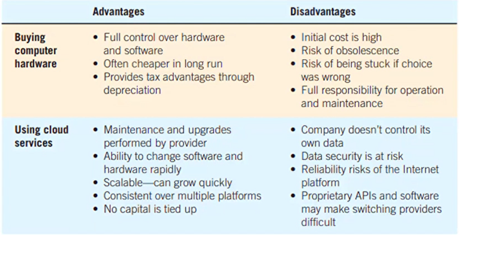
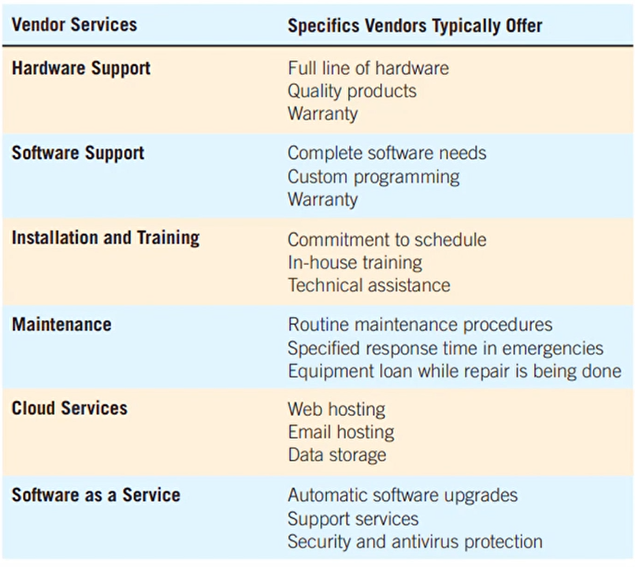
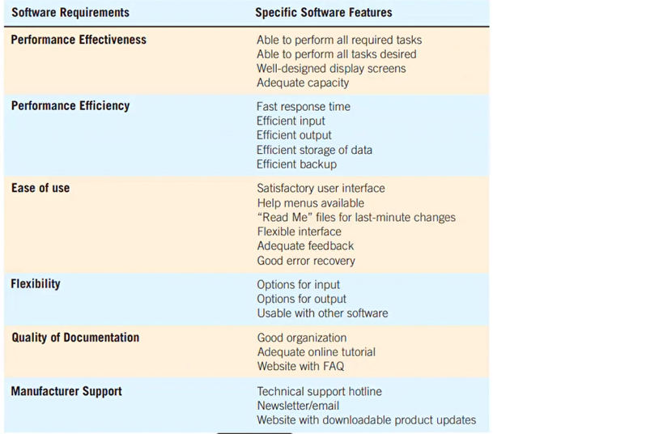
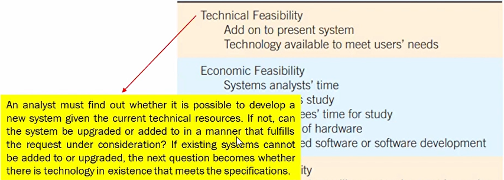
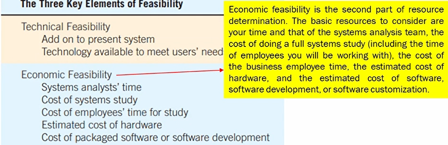
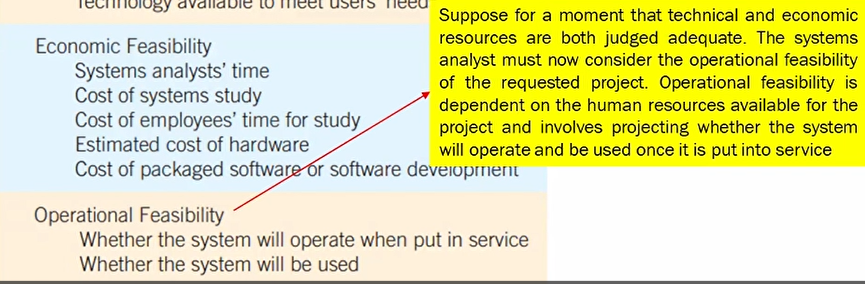
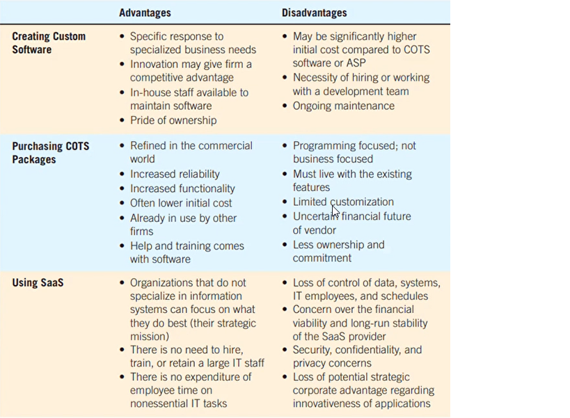

Project Management
Introduction
Systems projects begin with problems or with opportunities for improvement. Problems and opportunities are not the same
Systems analyst works with users to create a problem definition.
Once a project is suggested, the systems analyst works quickly with decision makers.
When project is approved the project activities are scheduled through the use of tools such as the Gantt charts and Programs Evaluation and Review Technique
- Project Initiation
- Determining Feasibility
- Technical Feasibility
- Economic Feasibility
- Operational Feasibility
- Ascertaining Hardware and Software Needs.
- Inventorying Computer Hardware
- Estimate Workloads
- Evaluating Computer Hardware for Purchase
- Renting Time and Space in the Cloud 
- Evaluation of Vendor Support for Computer Hardware. 
- Understanding the Bring Your Own Device (BYOD) option.
- Creating Custom Software.
- Purchasing COTS Software
- Using the Services of a SaaS provider
- Evaluation of Vendor Support for Software and SaaS 
Clients experience problems.
They recognize opportunities for improvement through upgrading, altering, or installing new systems when they occur.
To make sure that the solution is adaptable and possible.
{kind=link}
Can the company actually afford to do the project? They have to pay the programmers.
{kind=link}
More on human resources available. There is a system, the question is, Will they use it? Focuses more on will.
{kind=link}
To not buy unnecessary things like mouse.
{kind=link}
{kind=link}
Ready available, paliton lang nimo.
{kind=link}
{kind=link}